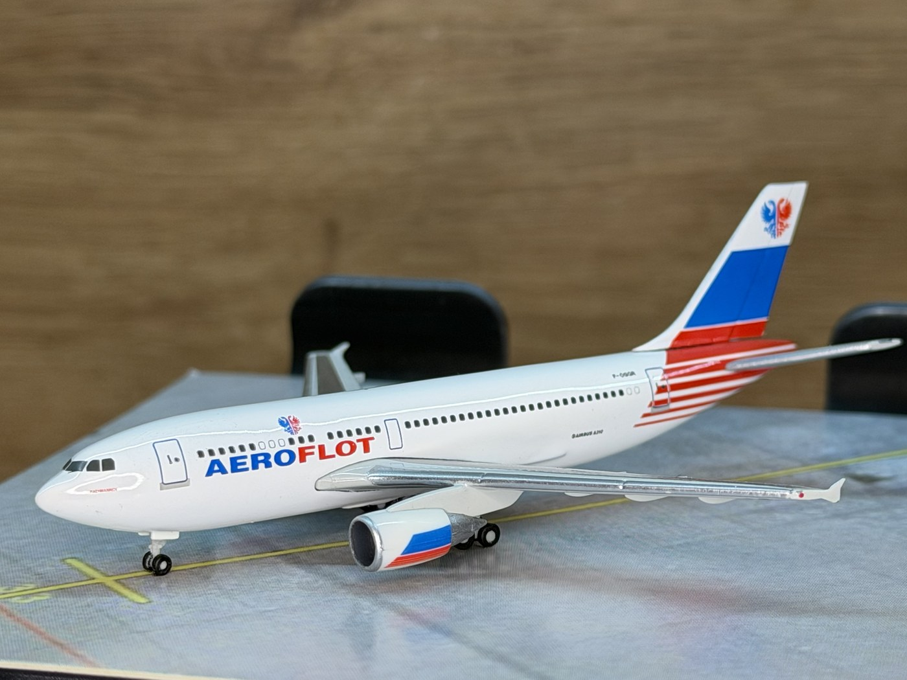

Airbus A310-300 · F-OGQR
Aeroflot
Herpa · 1:500 · 518185
Модель:Model: Металева колекційна модель Herpa, масштаб 1:500. Артикул 518185. Ліврея / серія: Перехідна/тестова ліврея (початок 1990-х). Ім'я борту: «Rachmaninov».Herpa die-cast model, scale 1:500. Item number 518185. Livery / edition: Interim/Test colour scheme (early 1990s). Aircraft name: "Rachmaninov".
Реальний прототип:Real prototype: Так — модель реального літака Airbus A310-300 з реєстрацією F-OGQR, експлуатант Aeroflot.Yes — models the real Airbus A310-300 registered F-OGQR, operated by Aeroflot.